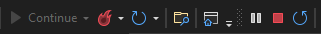

Manual de instalação
Frontend
O frontend é a parte da aplicação com a qual os usuários interagem diretamente. Ele se concentra em projetar e implementar a interface visual e interativa, tornando o software fácil de usar e visualmente atraente. O frontend é responsável por exibir informações, capturar entradas dos usuários e transmitir essas informações aos serviços para processamento. Em suma, o frontend tem como objetivo proporcionar uma experiência agradável e intuitiva para os usuários, facilitando a interação com o software.
Neste projeto, o frontend foi criado utilisando a linguagem typescript, com as bibliotecas React e Ant Design.
Como instalar
Pré-requisitos
- Instalar a versão LTS do NodeJS
- instalar o yarn
E caso vá utilizar o docker-compose:
- Instalar o docker
- Instalar o docker-compose
Com o docker-compose
O Docker é uma ferramenta criada facilitar o desenvolvimento, a implantação e a execução de aplicativos, permitindo que eles sejam isolados e executados de forma consistente em diferentes ambientes (como sistemas operacionais diferentes).
Passo-a-passo
- Na primeira vez que for usar, ou após instalar uma nova dependencia.
-
No terminal, dentro da raiz do projeto:
- Rode o comando
yarn, e aguarde a conclusão de sua execução - Rodar o comando
sudo docker-compose build, e aguarde a conclusão de sua execução - E por fim, rode o comando
sudo docker-compose up, para iniciar a aplicação
- Rode o comando
-
Nas vezes subsequentes, caso não tenha adicionado novas dependencias:
- Rodar o comando
sudo docker-compose up - Agora a interface pode ser utilizada no navegador com o endereço http://localhost:3000
Sem utilizar o docker-compose
Passo-a-passo
- Na primeira vez que for usar, ou após instalar uma nova dependencia.
-
No terminal, dentro da raiz do projeto:
- Rode o comando
yarn, e aguarde a conclusão de sua execução - Rode o comando
yarn start
- Rode o comando
-
Nas vezes subsequentes, caso não tenha adicionado novas dependencias:
- Rodar o comando
yarn start - Agora a interface pode ser utilizada no navegador com o endereço http://localhost:3000
Encerrando a aplicação
- Para encerrar execução da aplicação:
- Vá até o terminal em que a mesma esta sendo executada.
- Pressione simultaneamente as teclas ctrl+c.
Microsserviços
Microsserviços são uma abordagem de arquitetura de software em que um aplicativo é dividido em componentes independentes chamados de microsserviços. Cada microsserviço possui uma funcionalidade específica e se comunica com outros microsserviços através de interfaces bem definidas. Essa abordagem oferece modularidade, permitindo que cada componente seja desenvolvido, implantado e escalado de forma independente. Os microsserviços podem ser desenvolvidos em linguagens e tecnologias diferentes, facilitando a escolha das melhores ferramentas para cada funcionalidade. Além disso, os microsserviços podem ser distribuídos em servidores diferentes ou na nuvem, o que facilita a escalabilidade do sistema. Em resumo, os microsserviços proporcionam flexibilidade, modularidade e escalabilidade ao desenvolvimento de aplicativos.
No caso deste projeto, temos 3 microserviços, sendo estes desenvolvidos na linguagem C# (C sharp), com uso do framework .NET (dotnet), sendo que estes fazem o tratamento e manipulações das informações que estão sendo enviadas para o banco de dados, ou requisitadas pelo frontend.
Os nossos microsserviços
- UsuarioService: Serviço responsavel pelas funcionalidades relacionadas à autentificação (cadastro de usuarios, login, solicitação de recuperação de senha, redefinição de senha).
- EscolaServices: Serviço responsavel pelas funcionalidades relacionados as escolas (cadastro, busca, atualização e exclusão de escolas,e solicitações para ação do DNIT).
- UpsService: Serviço responsavel pelas funcionalidades relacionadas a acidentes de tránsito (cadastro de sinistros, calculo de UPS, cadastro e atualização dos dados de rodovia).
Como instalar
A forma de instalação é igual para todos os serviços, havendo diferenças apenas com base no sistema operacional.
Observação: No EscolaServices, é necessario adicionar um arquivo ".env" dentro da pasta "app", com as seguintes informações:
- EMAIL_SERVICE_ADDRESS : email usado para enviar a mensagem.
- EMAIL_SERVICE_PASSWORD: senha do email acima.
- EMAIL_DNIT: email que receberá a mensagem.
Windows e MacOs
Modo 1
- Abra um navegador da web e acesse o site oficial da Microsoft .NET: https://dotnet.microsoft.com/download/dotnet/6.0
- Role a página até a seção ".NET 6 SDK" e clique no botão de download adequado para seu sistema operacional (por exemplo, "macOS x64 Installer" para macOS 64 bits ou "Windows x64 Installer" para Windows 64 bits).
- O arquivo de instalação será baixado. Depois que o download for concluído, clique duas vezes no arquivo para iniciá-lo.
- O instalador será aberto. Leia e aceite os termos de licença.
- Selecione as opções de instalação que você deseja.
- Clique no botão "Install" (Instalar) para iniciar a instalação do .NET 6.
- Após a conclusão da instalação, você verá uma tela informando que o .NET 6 SDK foi instalado com sucesso.
- Para verificar se a instalação foi bem-sucedida, abra o Prompt de Comando ou o PowerShell e execute o seguinte comando:
dotnet --version
- Isso exibirá a versão do .NET instalada, confirmando se o .NET 6 está configurado corretamente.
Modo 2
Basta instalar a IDE Visual Studio escolhendo a versão gratuita (Versão Community). Após instalar o Visual Studio, ele automaticamente irá instalar o .NET com a versão mais estável.
Linux
Instale o SDK do .NET .
sudo apt-get update && \
sudo apt-get install -y dotnet-sdk-6.0
Instale o runtime ASP.NET Core.
sudo apt-get update && \
sudo apt-get install -y aspnetcore-runtime-6.0
Entre na pasta do serviço. Dentro da pasta "app" rode o comando:
dotnet run
Clonar Aplicação
Para clonar o repostório, basta utilizar os comandos abaixos:
UsuarioService
git clone https://github.com/fga-eps-mds/2023.1-Dnit-UsuarioService.git
UpsService
git clone https://github.com/fga-eps-mds/2023.1-Dnit-UpsService.git
EscolaService
git clone https://github.com/fga-eps-mds/2023.1-Dnit-EscolaService.git
Como Rodar
Utilizando docker-compose
Pré-requisitos
- Docker
- Docker-compose
Windows
Rode o seguinte comando na pasta da aplicação.
docker-compose build && docker-compose up
Linux ou MacOS
Rode o seguinte comando na pasta da aplicação.
sudo docker-compose build && sudo docker-compose up
Usando Visual Studio
Para rodar uma aplicação usando Visual Studio, basta clicar no arquivo com extenção 'sln' e em seguida clicar no ícone para rodar aplicação conforme mostra abaixo:

Usando Visual Studio Code
Para rodar utilizando o VS Code, basta seguir a seguinte instrução:
Entre na pasta do serviço. Dentro da pasta "app" rode o comando:
dotnet run
Encerrando a aplicação
No terminal em que a aplicação esta rodando, digite simultaneamente as teclas ctrl+c. Caso esteja utilizando o Visual Studio, clique no ícone quadrado vermelho

Histórico de versionamento
| Versão | Data | Modificação | Autor |
|---|---|---|---|
| 1.0 | 08/07/2023 | Abertura do documento e instruções para o frontend. | João Gabriel de Matos |
| 1.1 | 08/07/2023 | Incio do manual dos microserviços. | João Gabriel de Matos |
| 1.2 | 09/07/2023 | Atualização documento, detalhando itens para microserviços | Denys Rógeres |
| 1.3 | 14/07/2023 | Atulizando tutorial para incluir docker-compose | Denys Rógeres |